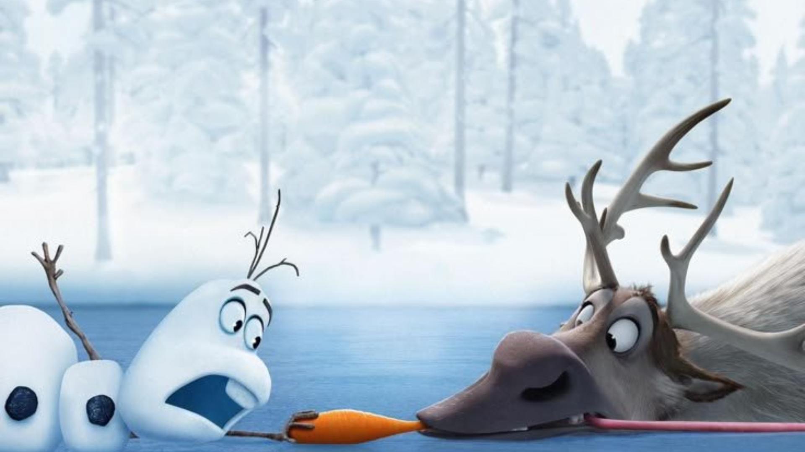

MY PERSONAL INFORMATION
BIOGRAPHY
Beatrice Harry Mutaki is a university student pursuing a bachelor's degree in computer science at the university
of Dar es Salaam, she is interested in learning technology, learning new digital skills and improving herself academically.
She enjoys exploring new ideas in computing and developing skills that can help her in the future. Her goal is to become successful
in the technology field and make a positive impact through her knowledge and work.
SKILLS
- Observational skills
- Map reading
- Public speaking
- Teamwork
- Empathy
| EDUCATIONAL BACKGROUND |
| LEVEL |
SCHOOL |
YEAR |
| PRIMARY SCHOOL |
MOTHER TERESA PRIMARY SCHOOL |
2018 |
| O-LEVEL |
FEO GIRLS SECONDARY SCHOOL |
2022 |
| A-LEVEL |
HENRY GOGARTY SECONDARY SCHOOL |
2025 |
UNIVERSITY EDUCATION |
UNIVERSITY OF DAR ES SALAAM |
2025 - Present |
HOBBIES
- Intellectual
- Her interests include developing problem solving skills through mind games like crossword puzzles and learning new programming concepts
- Social
- She enjoys travelling to new places,meeting new people and learning from diverse experiences through networking.

These are my favorite links